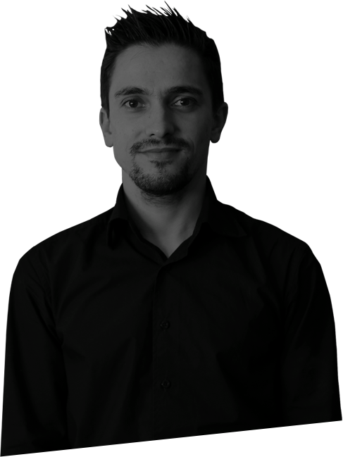

design & develop through stories
My name is Samuel Fialho and I’m a UX Engineer based in Lisbon and working fulltime now at Nuxeo. I love to design and code, though most of my time is spent developing the frontend of Nuxeo products.
Projects
Quando o desafio é desenhar para milhões de pessoas
Num momento em que a Nazaré teve um pico de mediatização devido à maior onda do mundo alguma vez surfada por um homem, era tempo de responder aos milhões de visitas mundiais que queriam saber mais sobre aquele fenómeno. Fui responsável pela criação da nova imagem do município, bem como pelo desenvolvimento do novo portal institucional.

Quando o desafio é desenhar para milhões de pessoas
Num momento em que a Nazaré teve um pico de mediatização devido à maior onda do mundo alguma vez surfada por um homem, era tempo de responder aos milhões de visitas mundiais que queriam saber mais sobre aquele fenómeno. Fui responsável pela criação da nova imagem do município, bem como pelo desenvolvimento do novo portal institucional.
Quando o desafio é desenhar para milhões de pessoas
Num momento em que a Nazaré teve um pico de mediatização devido à maior onda do mundo alguma vez surfada por um homem, era tempo de responder aos milhões de visitas mundiais que queriam saber mais sobre aquele fenómeno. Fui responsável pela criação da nova imagem do município, bem como pelo desenvolvimento do novo portal institucional.